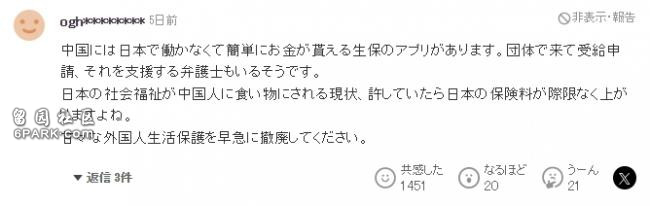
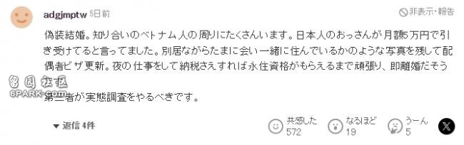

有亲人在日本的朋友有应该知道，想要去日本可以申请一个探亲签。根据审查情况，会发放15天、30天、90天的签证！相比15天的旅游签能拥有更长的在留时间。但无论怎么样，时间一到都得乖乖回家~
最近，因为想要在日本长期居留，有多名中国人被抓。
7月26日，日媒报道了一起中国人在日本搞出的傻事……
当事人名叫李春香，今年60岁。2020年，她与一位名叫石井伸治的73岁日本欧吉桑结婚了~
别误会，人家可不是在日本来一场黄昏恋，而是为了长期在留资格，选择铤而走险跑去伪造了结婚登记，并且把假的结婚登记提交到了日本横滨市的区役所。
被逮捕的除了那对假夫妻以外，还有44岁的鞠静、34岁的王浩等，一共5人落网。
其中石井伸治和鞠静分别收取了李春香60万日元为报酬，也就是大约2.9万人民币。
被逮捕后，刚开始鞠静还不承认自己谋划假结婚的事情。但无论她怎么嘴硬也无济于事，因为其他人全撂了。
为什么要宁愿花钱犯法也要留在日本呢？
李春香交代是为了照顾能留在日本照顾亲孙子。
前面说过旅游签是15天，探亲签最长是90天。之后回国还得待上半年再继续申请，对于李春香而言多少有点折腾，于是乎她寻求到一劳永逸的方法……
按照日本法律，最方便最快速得日本身份的方式，那就是和日本人结婚。
如果能和日本人或者有日本永住身份的人结婚三年，便可以提交永住申请。并且相对于工作签，她将来在日本的工作范围也没有限制。
这些种种“诱惑”，让李春香选择假结婚。
只能说，轻易别在违反边缘试探啊！这下好了，今后再想到日本照顾孙子可就比之前要难上千万倍了…..
▶对此自然免不了遭受日本网友的一番吐槽：

在中国存在能轻松获取日本工作保险金的应用程序。据说有团体来进行受领申请，还有支持他们的律师。日本的社会福利被中国人当作获取利益的手段，如果这种现状被容忍，日本的保险费将会无限制地上涨。应尽快废除宽松的外国人生活保护政策。

存在伪装结婚的情况。熟人中的越南人周围有很多这样的例子。据说有日本人老头每月收 5 万日元就答应伪装结婚。分居但偶尔见面并留下像一起居住的照片来更新配偶签证。从事夜间工作并纳税，一直努力到获得永住资格就马上离婚。
应该由第三方进行实际情况调查。
不知道是伪装结婚’或者‘因为孙子在日本所以想要照顾’，但因这些而涉及成功报酬的金钱关系这一事实已经很清楚了，所以最终恐怕也只能是自找麻烦。
其实这种投机取巧的事并不鲜见。
就在今年6月，有一个中国24岁留学生妹子，为了长期签证，选择和50多岁的日本男子结婚，最后双双被捕的案件。
女生名叫奚会媛，在2022年与50多岁的日本男子一起向区役所提交虚假结婚登记。
据警方通报，2019年奚会媛以留学生身份来到日本。
之后双方于2021年12月通过东京都的婚姻介绍所认识的，在女方在留资格到期前的3个月跑去结婚。
总共俩人就没见过几面，婚后也并没有夫妻之实。
要知道所有违法行为，都是要付出代价的！
一旦罪名成立，婚姻关系失效，会被判处5年以下有期徒刑，或50万以下的罚金，同时还会被遣返回国。
这不就是妥妥的赔了夫人又折兵……
近些年很多外国人为了得到日本永住而冒险假结婚。人家日本警方也不是吃素的呀，为了大力打击假结婚案件，采取不定期家访、抽查、询问夫妻生活细节和向邻居打探消息等手段。